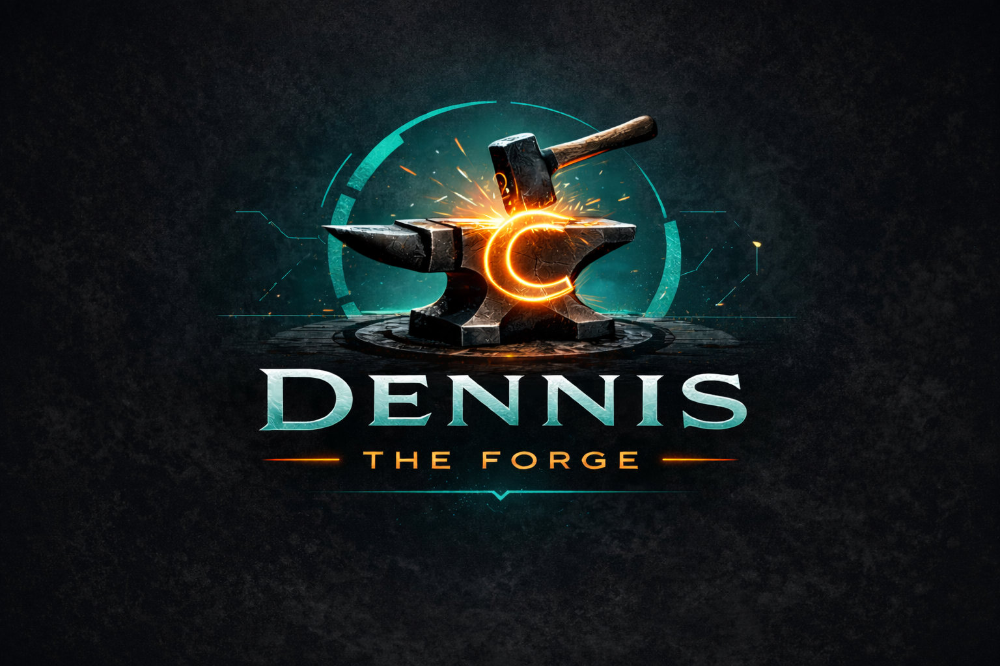
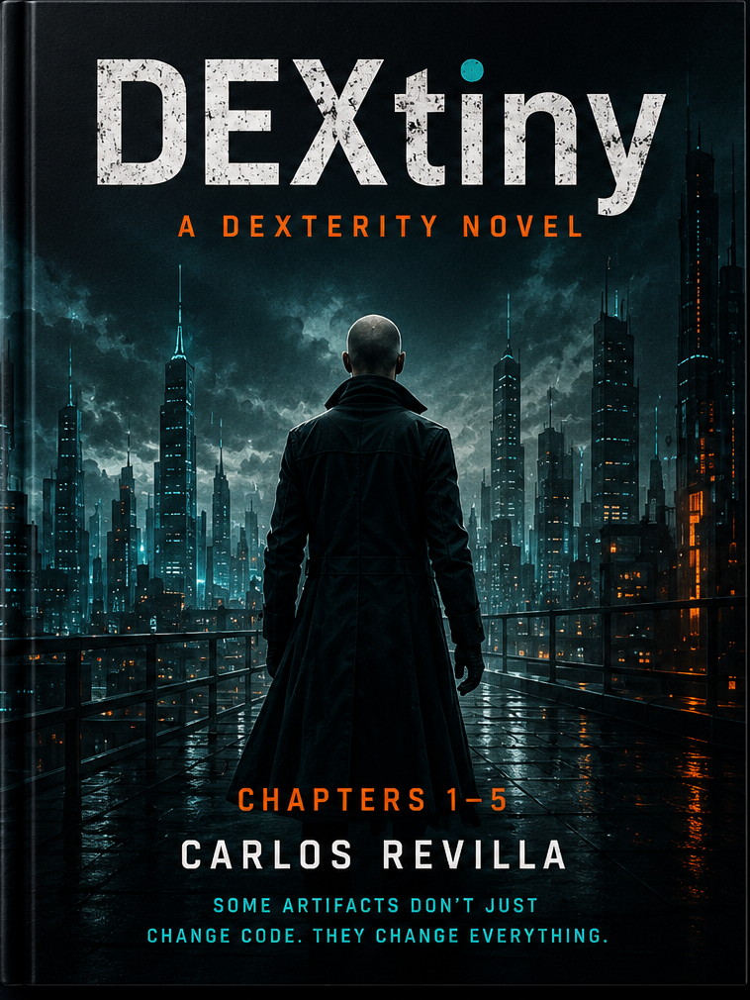

Comprende lo que existe. Controla lo que cambia.

Primero, establece qué existe. Después, decide qué debe cambiar. Inspecciona el plan, verifica el resultado y, cuando sea compatible, conserva un artefacto DEX portable, sin depender de un servicio central como fuente de verdad.
Comprende qué operación se propone, inspecciónala antes de ejecutarla, verifica la integridad del artefacto y conserva un registro portable del proceso, sin depender de un servicio central como fuente de verdad.

La seguridad comienza con un plan.
La información no debería modificarse a ciegas. Dennis separa la operación prevista de su ejecución, para que los cambios compatibles puedan inspeccionarse y validarse antes de aplicarlos. Cada ámbito requiere además controles, pruebas y procedimientos operativos adecuados.
Planifica antes de cambiar
Dennis genera un plan de transformación determinista antes de modificar tu proyecto. El plan describe lo que sucederá antes de que ocurra cualquier cambio.
Comprende qué va a suceder
Inspecciona la transformación antes de ejecutarla. Nada ocurre a tus espaldas: el propio plan se convierte en la fuente de verdad.
Verifica antes de aplicar
Valida el plan, comprueba su integridad y aplícalo solo cuando estés conforme con el resultado.
Un modelo basado en la integridad de la información
Dennis parte de una idea sencilla: las operaciones sobre información deben ser predecibles, inspeccionables y verificables de forma independiente cuando el flujo de trabajo y su implementación ofrezcan esas garantías.
Determinista
La misma entrada produce la misma salida. La reproducibilidad forma parte del núcleo de Dennis; no es un añadido de última hora.
Inspeccionable
Nada ocurre a tus espaldas. Puedes revisar, verificar y comprender los planes antes de aplicarlos.
Portable
Las transformaciones se convierten en artefactos. Guárdalos, versiona sus archivos, compártelos y utilízalos donde los necesites, sin depender de un servicio central.
Dos motores complementarios. Un solo protocolo.
Dennis combina el descubrimiento del estado con la transformación controlada de información. Pueden trabajar juntos, pero cada capacidad también es útil por sí misma: a veces el objetivo es comprender y documentar lo que existe; otras, transformar información proporcionada mediante un proceso revisable.
1. Descubrimiento y reconstrucción del estado
Analiza un objetivo compatible y crea una descripción estructurada de su estado actual. Usa esa base para inspeccionar contenido, comparar estados, identificar diferencias y comprender qué hay antes de decidir el siguiente paso.
Capacidad central: Inventario · Captura de estado · Análisis estructural · Comparación
2. Transformación controlada de información
Define la operación prevista, genera un plan inspeccionable, valídalo y aplica los cambios compatibles de forma deliberada. Cuando sea compatible, conserva la operación y su resultado en un artefacto DEX portable para revisarlos y verificarlos posteriormente.
Capacidad central: Planificación · Transformación · Validación · Artefactos DEX · Reproducibilidad
Del descubrimiento a la transformación controlada
Un flujo habitual consiste en inspeccionar un objetivo, comprender su estado, planificar un cambio compatible, revisar y verificar el plan, aplicarlo y conservar el resultado. El descubrimiento no tiene que terminar en una transformación; las transformaciones compatibles también pueden partir de datos proporcionados.
1. Analiza
Examina el material de origen e identifica el contenido relevante para una operación compatible.
2. Planifica
Genera un plan determinista que describa la operación prevista y los cambios que contempla.
3. Inspecciona
Revisa el plan antes de ejecutarlo. Comprende la operación prevista antes de que ocurra.
4. Verifica
Valida el plan y comprueba su integridad antes de aplicar la operación.
5. Aplica
Ejecuta la operación solo después de revisar y aceptar el plan.
6. Empaqueta
Conserva la operación como un artefacto DEX portable que puedas almacenar, compartir y revisar posteriormente.
Conserva el proceso en un artefacto DEX
Una operación importante sobre información debería dejar algo más que un resultado difícil de explicar. Los artefactos DEX conservan una representación portable e inspeccionable de una transformación determinista, incluidos su plan y sus metadatos, para que pueda revisarse, verificarse, compartirse y conservarse.
Portable
Los artefactos DEX son archivos. Guárdalos localmente, consérvalos en Git, compártelos con tu equipo o publícalos en un registro de artefactos.
Inspeccionable
Un DEX contiene un plan de transformación legible para las personas, junto con sus metadatos. Puedes inspeccionar qué representa el artefacto sin depender de un servicio alojado.
Verificable
El contenido determinista puede resumirse mediante hashes y verificarse. Las firmas criptográficas opcionales pueden aportar evidencia adicional de procedencia e integridad.
Reproducible
Como el artefacto representa una transformación determinista, puede conservarse y reproducirse independientemente de la máquina en la que se creó.
Te damos la bienvenida a Forge
La CLI de Dennis proporciona el motor de procesamiento. Forge ofrece un lugar para almacenar, organizar, descubrir y compartir artefactos DEX como parte de un flujo más amplio de integridad de la información.
Almacena tus artefactos
Sube artefactos DEX y mantenlos organizados en un entorno estructurado, en lugar de tenerlos dispersos entre equipos, carpetas y mensajes de chat.
Organiza tu trabajo
Utiliza Workspaces y Projects para agrupar los artefactos relacionados y mantener organizado el trabajo de transformación a medida que crece.
Colabora
Comparte artefactos con quienes los necesitan. Los niveles de visibilidad privada, organizacional y pública te permiten controlar quién puede ver tu trabajo.
Busca e inspecciona
Busca e inspecciona artefactos en la plataforma Forge alojada, mientras mantienes los archivos DEX subyacentes portables e independientes.
Preserva la confianza
Los artefactos permanecen inmutables. Forge indexa sus metadatos y proporciona la infraestructura necesaria sin modificar los artefactos.
Sin quedar atado a la plataforma
Los artefactos siguen siendo tuyos. Expórtalos, consérvalos localmente y continúa utilizándolos con la CLI de Dennis sin depender de la plataforma alojada.
Un modelo de integridad. Muchas aplicaciones.
Dennis es un protocolo de seguridad de la información basado en planes de procesamiento deterministas, cambios inspeccionables y artefactos portables cuya integridad puede verificarse. La transformación de software es su aplicación más madura en la actualidad. La extracción de documentos estructurados es experimental; los flujos jurídicos/notariales y forenses siguen en fase exploratoria y requieren controles, validación e integraciones específicas de cada ámbito.
Desarrollo de software
Planifica y revisa refactorizaciones, migraciones e internacionalización del código antes de aplicar cambios. Conserva la transformación como un artefacto portable que tus compañeros puedan inspeccionar y verificar.
Área consolidada: flujos de transformación de software.
Documentos estructurados
Los extractores experimentales recopilan cadenas de texto compatibles de HTML, Microsoft Word DOCX y LibreOffice ODT y las convierten en JSON estructurado con contexto de origen. La extracción es de solo lectura; todavía no ofrece una reconstrucción completa de los documentos originales.
Experimental: herramientas de extracción de documentos.
Despachos jurídicos y notarías
Una posible base para flujos controlados de procesamiento documental en los que los cambios deban revisarse y conservarse. Las plantillas especializadas, las reglas de cumplimiento y las integraciones jurídicas requieren desarrollo adicional.
En exploración: no es un sistema de gestión de despachos ni de expedientes jurídicos.
Análisis forense y aplicación de la ley
Los planes de procesamiento deterministas y los artefactos verificables pueden respaldar procedimientos reproducibles y revisables para procesar evidencia. El núcleo todavía no incluye integraciones forenses especializadas ni flujos de cadena de custodia validados.
En exploración: las comprobaciones de integridad, por sí solas, no demuestran la autenticidad de la evidencia.
Educación e investigación
Enseña transformaciones reproducibles, planes inspeccionables y flujos de trabajo basados en artefactos. El alumnado y los investigadores pueden examinar qué pretende hacer una transformación en lugar de tratarla como un script opaco.
Enfoque actual: flujos reproducibles de aprendizaje e investigación.
Flujos de trabajo auditables para equipos
Comparte artefactos DEX que describan los cambios previstos. Revisa los planes antes de ejecutarlos, verifica la integridad de los artefactos y utiliza firmas criptográficas opcionales cuando necesites una capa adicional de confianza.
Capacidad central: artefactos de transformación inspeccionables y portables.
Elige el plan de Forge que mejor se adapte a ti
Empieza con Forge gratis y amplía el plan cuando tu trabajo lo requiera. Los planes de pago añaden almacenamiento, privacidad, colaboración y funciones de organización; no imponen restricciones artificiales a Dennis.
Gratis
Empieza a explorar Forge y a trabajar con artefactos públicos.
- 100 MB de almacenamiento
- Artefactos públicos
- Soporte de la comunidad
- CLI gratuita para siempre
Basic
Para desarrolladores independientes que necesitan almacenamiento privado y firma de artefactos.
- 1 GB de almacenamiento
- Artefactos privados
- Firma de artefactos
- Soporte por correo electrónico
Pro
Para desarrolladores y profesionales que gestionan colecciones más grandes de artefactos.
- Todo lo incluido en Basic
- 10 GB de almacenamiento
- Organizaciones
- Permisos avanzados
- Ampliaciones de almacenamiento
Team
Para equipos que necesitan espacios de trabajo compartidos, colaboración y capacidad para crecer.
- Todo lo incluido en Pro
- 5 GB de almacenamiento por usuario
- 30 GB de almacenamiento compartido para el equipo
- Espacios de trabajo para equipos
- Collaboration
- Soporte prioritario
Enterprise
Para organizaciones que necesitan infraestructura dedicada, soporte o acuerdos específicos.
- Organizaciones ilimitadas
- Soporte dedicado
- Incorporación personalizada
- Opciones de alojamiento propio
- Acuerdos empresariales
Todos los planes de Forge incluyen el núcleo
Forge puede crecer con tu trabajo sin alterar los principios fundamentales del protocolo. Tus artefactos DEX siguen siendo portables, inspeccionables y tuyos.
Artefactos DEX
Trabaja con artefactos deterministas diseñados para inspeccionarse, verificarse, conservarse y compartirse.
Proyectos y espacios de trabajo
Organiza los artefactos relacionados en proyectos y espacios de trabajo a medida que crece tu trabajo.
Control e integridad
Controla la visibilidad de los artefactos y trabaja con una infraestructura diseñada para preservar la integridad y ofrecer un comportamiento predecible.
Conserva tus artefactos
Tus artefactos DEX no quedan atrapados en Forge. Expórtalos y sigue trabajando con la CLI de Dennis cuando quieras.
La biblioteca de Dennis Forge
Dennis Forge no trata solo de software. Los artefactos DEX y las historias que los rodean forman parte del mismo universo: conocimiento preservado en un formato que puede compartirse, inspeccionarse y recordarse.

DEXtiny
Una novela de DEXterity. Los primeros cinco capítulos presentan a Mateo, Annika, Navarro y el misterio que rodea a un artefacto DEX aparentemente común.
Los capítulos 1–5 ya están disponibles. Paga lo que quieras, con una contribución mínima de US $0.50, y recibe el PDF por correo electrónico una vez confirmado el pago.
Construye el futuro de la información verificable
Dennis también sirve a quienes aprenden, enseñan e investigan flujos de información reproducibles; la transformación de software es su aplicación actual más madura.
Estudiantes
Aprende transformación determinista de software con las mismas herramientas y conceptos que se utilizan en todo el ecosistema Dennis.
Docentes
Incorpora flujos de transformación reproducibles a tus cursos, laboratorios y proyectos de ingeniería de software.
Instituciones de investigación
Explora transformaciones deterministas y flujos de trabajo basados en artefactos en entornos de investigación.
Conviértete en fundador de Forge
Antes de que hubiera una comunidad y miles de artefactos, hubo personas que creyeron en el proyecto desde el principio.
Membresías de fundador. Ni más ni menos.
Las primeras 161 personas que decidan apoyar a Dennis formarán parte de su historia como fundadores de Forge.
Los fundadores reciben beneficios de por vida, reconocimiento especial y un lugar en el Salón de Fundadores.
Y porque Dennis debería dejar el mundo un poco mejor de como lo encontró, se dona el 15 % de cada membresía de fundador: 10 % a UNICEF y 5 % a la investigación del cáncer infantil.
¿Listo para forjar?
Empieza con la CLI gratuita de Dennis, crea tu primer artefacto determinista o únete a Forge para construir un flujo de trabajo a su alrededor.
Gratis para siempre. Código abierto. Determinista por diseño.
Construimos algo más grande
Dennis Forge es más que un proyecto de software: también es una forma de contribuir a la sociedad.
Salud infantil
Una parte de los ingresos de Dennis Forge se dona a organizaciones benéficas, entre ellas UNICEF y organizaciones que apoyan la investigación contra el cáncer y la salud infantil. Para garantizar la transparencia, se publicarán informes y comprobantes de las donaciones cada seis meses.
Educación y oportunidades
Creemos que el conocimiento debe ser accesible y que la tecnología puede crear oportunidades para todas las personas.
Contribuir a la sociedad
Dennis Forge se compromete a destinar parte de sus ingresos a causas que van más allá del software.
No necesitas Dennis Forge para contribuir. Si estas causas te importan, también puedes apoyarlas directamente:
Descuento por apoyar una buena causa
Ayudar a los demás merece un pequeño reconocimiento.
Envíanos un comprobante de una donación de al menos US $20 a UNICEF o St. Jude Children's Research Hospital y recibe un 25 % de descuento en cualquier plan de Dennis Forge. (Aplican términos y condiciones.)
Términos y condiciones
- Donación mínima: US $20.
- Válido para donaciones a UNICEF, St. Jude Children's Research Hospital o cualquier organización sin fines de lucro verificada que trabaje para mejorar el mundo.
- Las donaciones aprobadas otorgan un 25 % de descuento durante tres ciclos de facturación consecutivos.
- Es posible que se solicite el comprobante de la donación y, cuando corresponda, la acreditación de que la organización receptora no tiene fines de lucro.
- Solo puede haber un descuento por donación activo a la vez en cada cuenta.
- Cuando venza un descuento por donación, una nueva donación aprobada podrá dar derecho a otro periodo de descuento.
- El descuento no se puede combinar con membresías de fundador ni con otras promociones.
- Dennis Forge se reserva el derecho de rechazar comprobantes no verificables u organizaciones que no se ajusten al propósito de este programa.